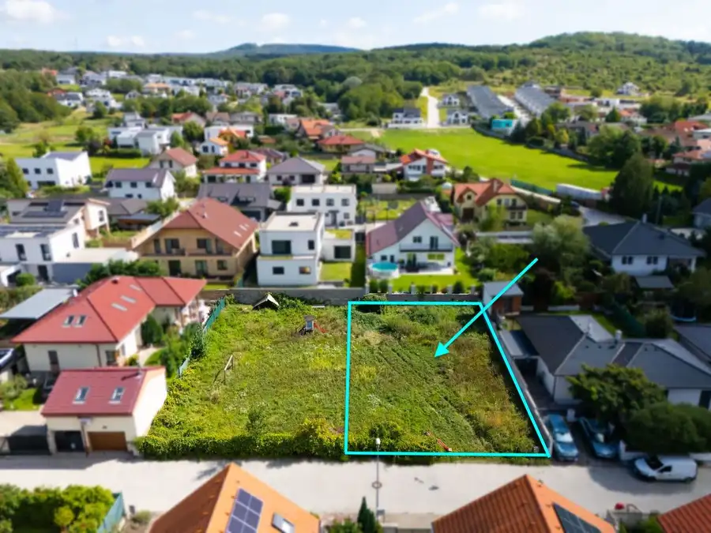
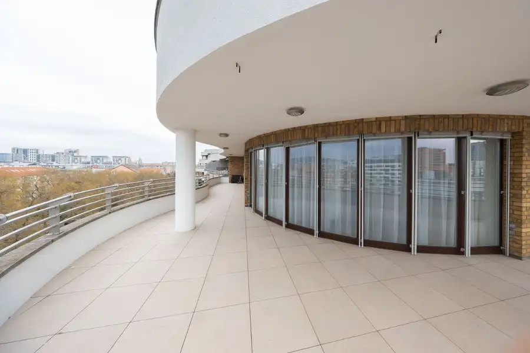
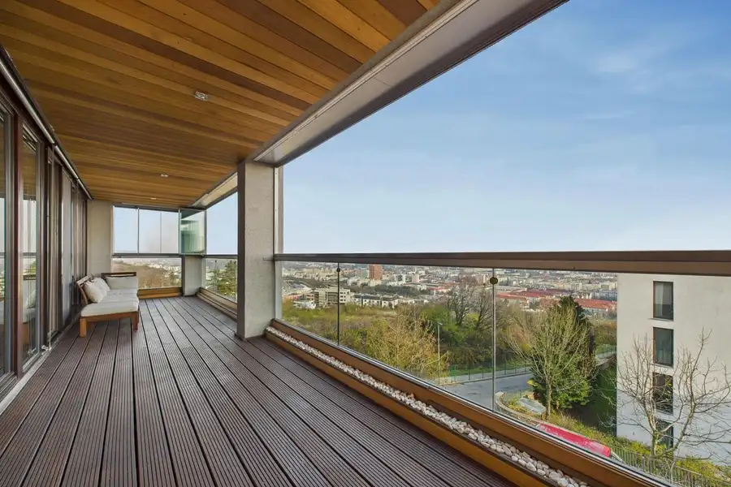
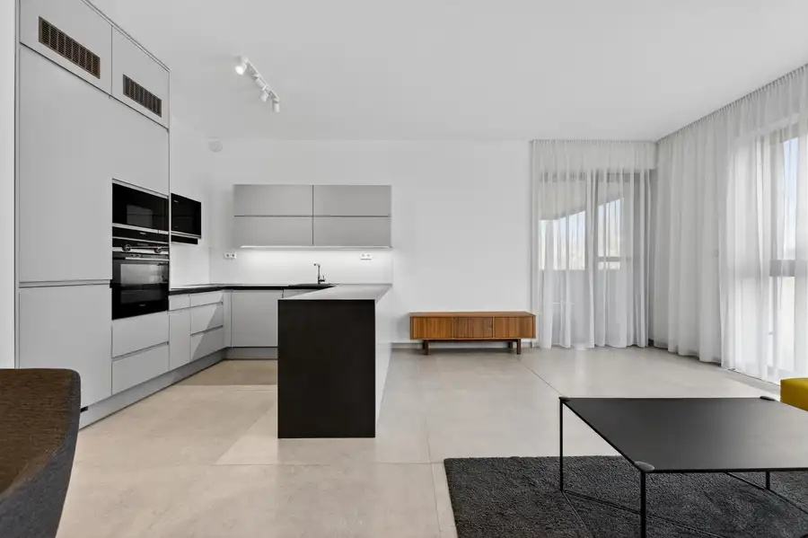
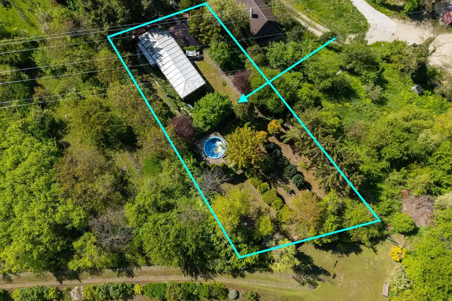
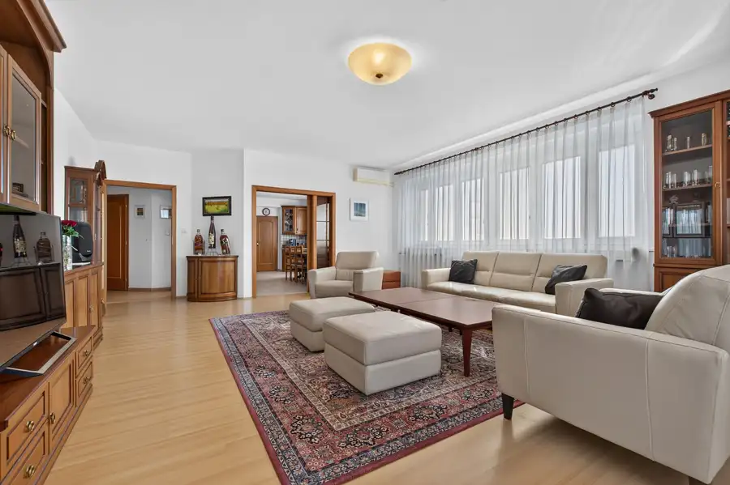
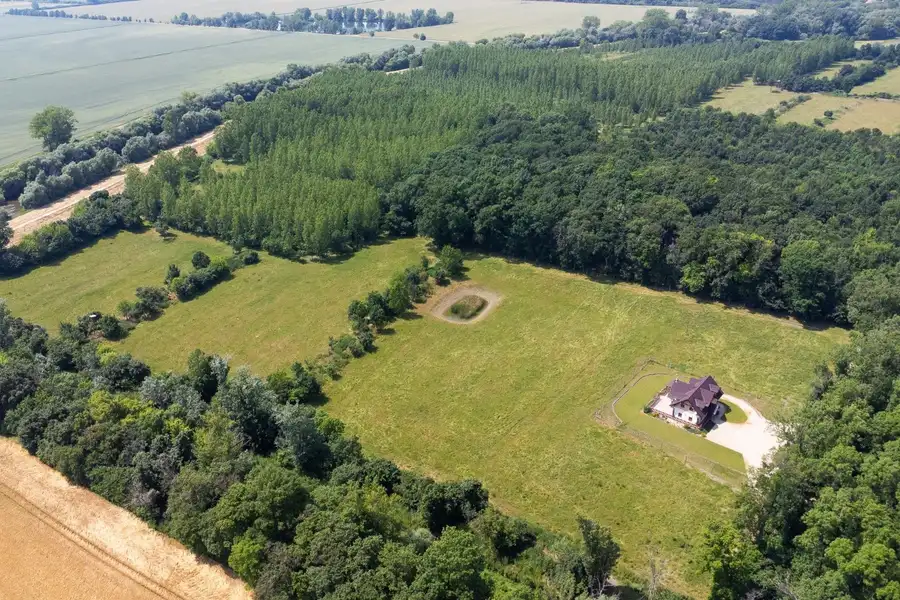
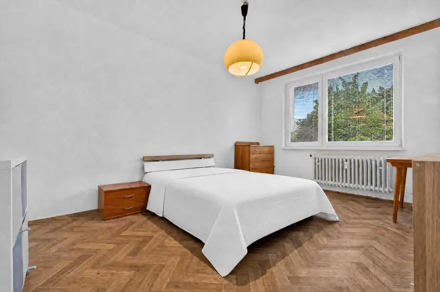
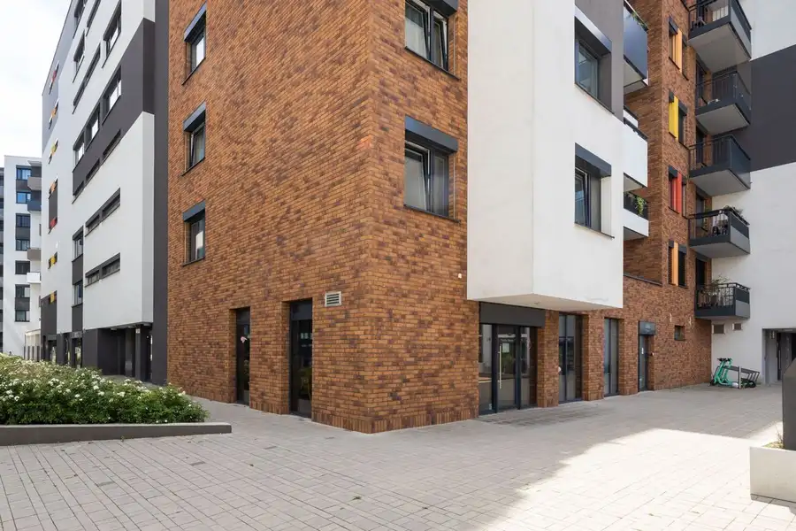
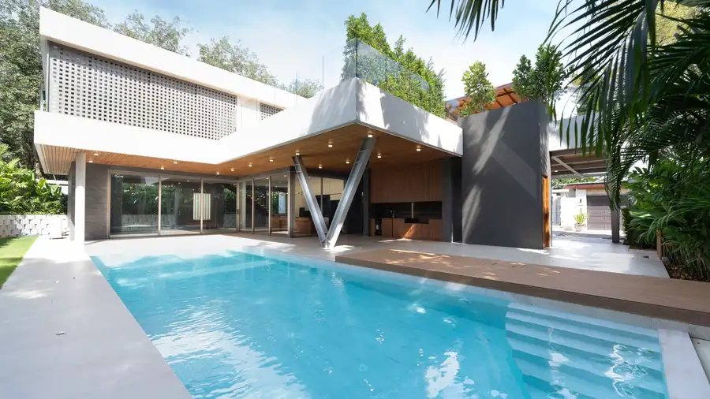

Aktuálna ponuka
Nehnuteľnosti, ktoré ponúkam
10 nehnuteľností na predaj a prenájom. Vyberte typ, alebo napíšte lokalitu.
10 z 10 ponúk

PozemokNové6 235 000 €MIKELSSEN - Na predaj stavebný pozemok o rozlohe 557 m2 v zastavanom území Stupava 557 m² Realitná kancelária MIKELSSEN ponúka exkluzívne na predaj slnečný pozemok na Kosatcovej ulici v Stupave. Pozemok slúži na výstavbu rodinného domu.…
BytNové10 2 850 €MIKELSSEN - Na prenájom v projekte GAUDI priestranný 4 izbový byt s veľkou terasou Ružinov, Bratislava 4-izbový272 m²6. podlažie Realitná kancelária MIKELSSEN exkluzívne ponúka na prenájom vo výnimočnom projekte Gaudi 4 izbový byt s veľkou terasou v pokojnej časti Ružinova, na…
Byt10 699 900 €MIKELSSEN - Na predaj PARKVILLE 4 izbový byt o veľkosti 156 m2 Nové Mesto, Bratislava 4-izbový156 m²3. podlažie Realitná kancelária MIKELSSEN ponúka exkluzívne na predaj luxusný priestranný 4 izbový byt v projekte PARKVILLE v Novom Meste na začiatku Koliby na…
Byt10 470 000 €MIKELSSEN - Rezidencia Nová Koliba na predaj 3 izbový byt o výmere 97,3 m² Nové Mesto, Bratislava 3-izbový97.3 m²2. podlažie Realitná kancelária Mikelssen exkluzívne ponúka na predaj moderný a priestranný 3-izbový byt v obľúbenom projekte Rezidencia Nová Koliba na ulici Pod…
Pozemok10 220 000 €MIKELSSEN - Na predaj záhradná chatka s bazénom na veľkorysom pozemku v Karlovej Vsi Karlova Ves, Bratislava 1078 m² Realitná kancelária MIKELSSEN ponúka exkluzívne na predaj slnečný pozemok so záhradnou chatkou a bazénom na ulici Hany Meličkovej v Karlovej…
Byt10 640 000 €MIKELSSEN - Na predaj 6 izbový byt o veľkosti 205 m2 s výhľadom na Rakúsko Karlova Ves, Bratislava 205 m²3. podlažie Realitná kancelária MIKELSSEN ponúka exkluzívne na predaj veľkometrážny a zaujímavo riešený 6 izbový byt s dvoma loggiami a 2 samostanými garážami vo…
Dom10 2 300 000 €MIKELSSEN - Na predaj ohradený pozemok o rozlohe 560 000 m2 s 5 izbovým domom Vinodol 560000 m² Realitná kancelária MIKELSSEN ponúka exkluzívne na predaj v malebnom prostredí polosamoty pri obci Vinodol, neďaleko mesta Nitra, rozsiahly pozemok o…
Byt10 259 900 €MIKELSSEN - Na predaj 3 izbový byt s možnosťou prerobenia na 4 izbový Ružinov, Bratislava 3-izbový70 m²3. podlažie Realitná kancelária MIKELSSEN ponúka exkluzívne na predaj dispozične zaujímavý 3 izbový byt na Exnárovej ulici, v jednej z obľúbených a tichých častí…
Komerčné priestoryNové10 Cena dohodouMIKELSSEN - Na predaj retailový priestor v STEIN II., 132 m2 v Starom Meste Staré Mesto, Bratislava 132 m² Realitná kancelária MIKELSSEN ponúka exkluzívne na predaj nebytový priestor v projekte STEIN II. Nehnuteľnosť sa predáva ako ho vidíte na…
Dom10 Cena dohodouMIKELSSEN -Na predaj luxusná vila v španielskom štýle, Phuket - Thajsko Reality 775 m² Realitná kancelária MIKELSSEN Vám ponúka na predaj nadštandardnú 5-izbovú vilu v španielskom štýle, ktorá sa nachádza v tichej a vyhľadávanej…Tomuto výberu zatiaľ nezodpovedá žiadna ponuka. Napíšte mi, čo hľadáte.